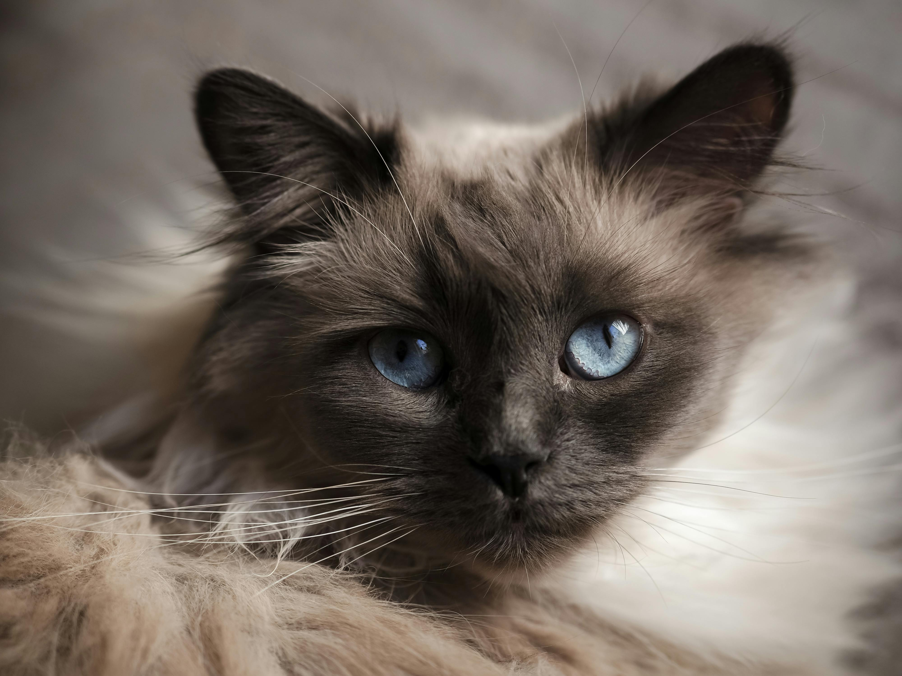

The Birman cat is a longhair cat with distinct, white paws. Its name means "Sacred Cat of Burma." It has dazzling blue eyes and is very calm ans collected. They also can be pretty talkative when encouraged to do so and are very playful and sociable.
